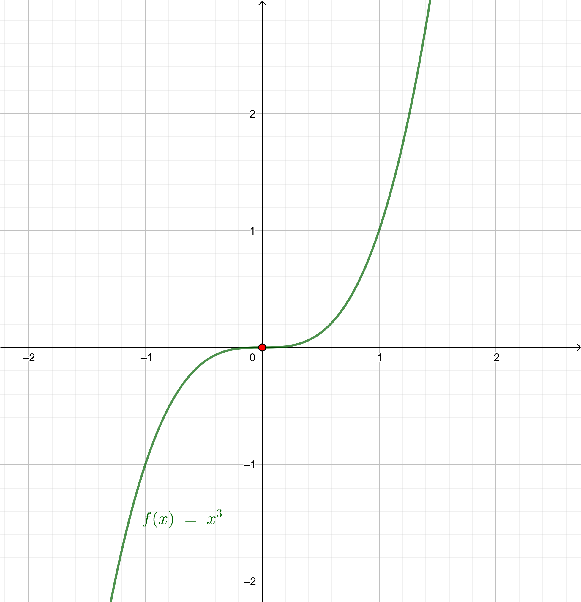
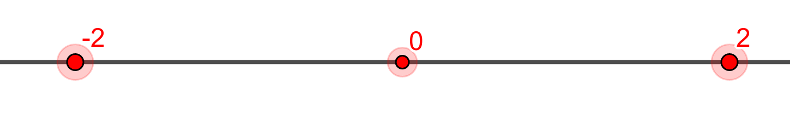

Monotonía y extremos relativos
Teorema 1
- Si \(f' (a)>0\Longrightarrow f\) es creciente en \(x=a\).
- Si \(f' (a)<0\Longrightarrow f\) es decreciente en \(x=a\)
El recíproco no es cierto:
\(f \text{ creciente en } x=a \overset{\text{¿¿??}}{\Longrightarrow} f'(a)>0\)

\(f'(x)=3x^2\Longrightarrow f'(0)=0\).
Luego el recíproco del teorema anterior no es cierto.
Teorema 2 (Condición necesaria de extremo relativo)
Si \(f\) es derivable y tiene un extremo relativo en \(x=a\Longrightarrow f'(a)=0\).
El recíproco tampoco es cierto.
\(f '(a)=0 \overset{\text{¿¿??}}{\Longrightarrow} f \text{ tiene un extremo relativo en } x=a\)
\(f(x)=x^3\Longrightarrow f'(x)=3x^2\Longrightarrow f'(0)=0\)
Pero \(f\) es creciente en \(x=0\) como se aprecia en la gráfica y no presenta un extremo relativo en dicho punto.
Luego el recíproco del teorema anterior no es cierto.
Definición 1 (Punto crítico)
Se dice que \(x=a\) es un punto crítico de \(f\) si sucede que \(f'(a)=0\).
Ejemplo 1
Vamos a estudiar la monotonía y los extremos de \(f(x)=x^4-8x^2+5\).
\(Dom(f)=\mathbb{R}\), \(f\) es continua en \(\mathbb{R}\) y \(f\) es derivable en \(\mathbb{R}\) con \(f'(x)=4x^3-16x\). Calculemos los puntos críticos de \(f\):
\(f'(x)=0\Longrightarrow 4x(x^2-4)=0\Longrightarrow \begin{cases}
4x=0\Longrightarrow x=0\\
x^2-4=0\Longrightarrow x=\pm2
\end{cases} \)
En una recta introducimos:
- los puntos frontera del dominio,
- los puntos donde la función no sea continua,
- los puntos donde no sea derivable y
- los puntos críticos.
Dicha recta ha quedado dividida en 4 trozos, analizamos el signo de la derivada en cada uno de ellos.

Ahora
| \((-\infty,-2)\) | \((-2,0) \) | \((0,2) \) | \((2,+\infty) \) | |
| Signo de \(f'\) | - | + | - | + |
| Monotonía de \(f\) | \(\searrow\) | \(\nearrow\) | \(\searrow\) | \(\nearrow\) |
\(f'(-3)=-60<0\); \(f'(-1)=12>0\); \(f'(1)=-12<0\); \(f'(3)=60>0\)
Monotonía:
\(f\) es decreciente en \((-\infty,-2)\)
\(f\) es creciente en \((-2,0)\)
\(f\) es decreciente en \((0,2)\)
\(f\) es creciente en \((2,+\infty)\)
Extremos:
En \(x=-2\) la función pasa de ser decreciente a creciente de forma continua \(\Longrightarrow\) En \(x=-2\) hay un mínimo relativo que vale \(f(-2)=-11\).
En \(x=0\) la función pasa de ser creciente a decreciente de forma continua \(\Longrightarrow\) En \(x=0\) hay un máximo relativo que vale \(f(0)=5\).
En \(x=2\) la función pasa de ser decreciente a creciente de forma continua \(\Longrightarrow\) En \(x=2\) hay un mínimo relativo que vale \(f(2)=-11\).
Más sobre extremos relativos
Teorema 3
- Si \(f'(a)=0 \) y \(f''(a)<0\Longrightarrow f\) tiene un máximo relativo en \(x=a\).
- Si \(f'(a)=0\) y \(f''(a)>0\Longrightarrow f\) tiene un mínimo relativo en \(x=a\).
Ejemplo 2
Dada la función \(f(x)=x^3+9x^2-5\), vamos a calcular sus extremos.
Como \(f'(x)=3x^2+18x\), ahora calculamos los puntos críticos:
\( f'(x)=0\Longrightarrow 3x(x+6)=0 \Longrightarrow\begin{cases}
x=0\\
x=-6
\end{cases}
\)
Como \(f''(x)=6x+18\):
\(f''(0)=18>0\Longrightarrow\) en \(x=0\) la función tiene un mínimo relativo que vale \(f(0)=-5\).
\(f''(-6)=-18<0\Longrightarrow\) en \(x=-6\) la función tiene un máximo relativo que vale \(f(-6)=103\).
Extremos absolutos
Teorema 4 (Teorema de Weierstrass)
Si \(f\) es continua en \([a,b]\Longrightarrow f\) alcanza sus extremos absolutos en \( [a,b]\).
Para calcular los máximos y mínimos absolutos hay que:
- estudiar los extremos relativos,
- calcular \(f(a)\) y \(f(b) \),
- quedarse con los valores más grande y más pequeño.
Si el intervalo no fuera de la forma \( [a,b]\) se actúa igual pero calculando \(\displaystyle\lim_{x\to a}f(x) \) ó \(\displaystyle\lim_{x\to b}f(x) \) si no se puede hacer \(f(a)\) ó \(f(b)\). Se analiza si existe dicho valor más grande y más pequeño, porque ahora puede no existir alguno o los dos.
Ejemplo 3
Sea \(f:[0,2\pi]\longrightarrow \mathbb{R}\), la función definida por \(f(x)=e^x\left(\cos(x)+\sin(x)\right)\). Halla los extremos absolutos de \(f\) (abscisas donde se obtienen y valores que se alcanzan).